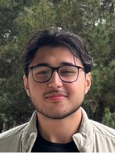
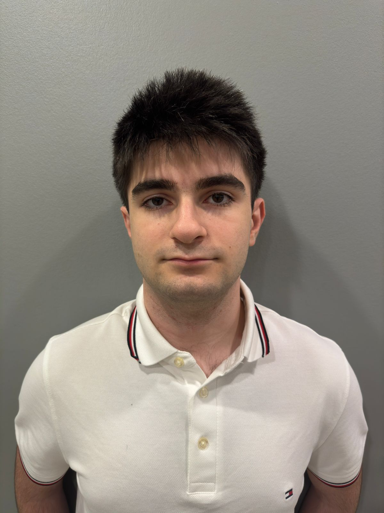
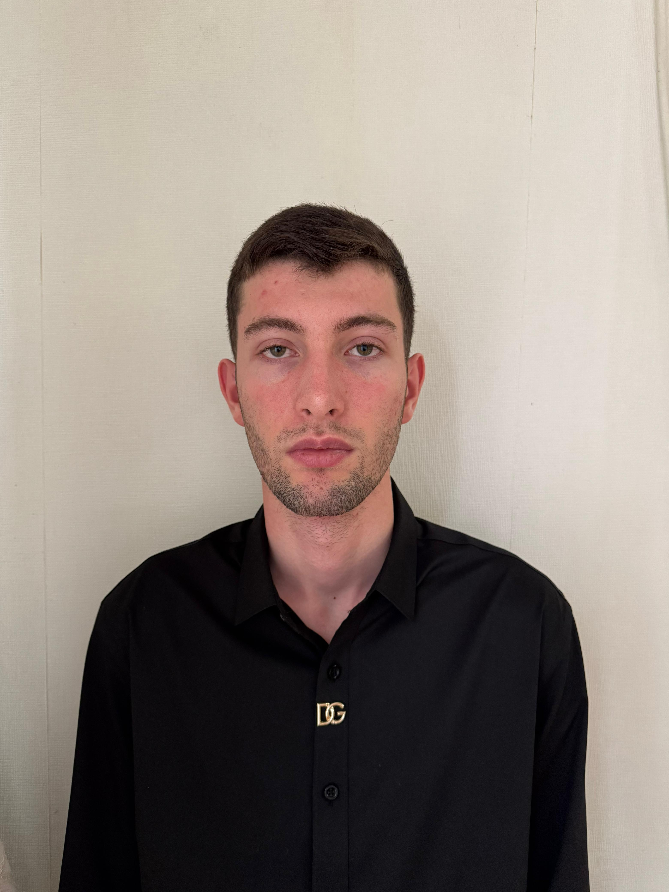
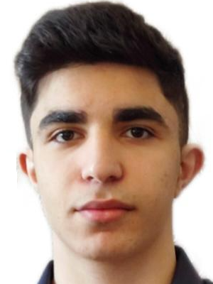
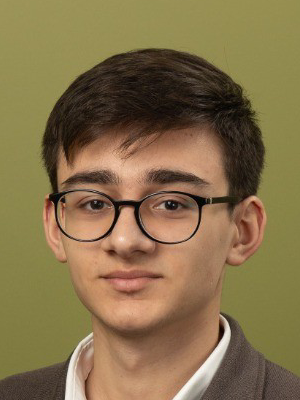

Nice to meet you!
Huseyn Huseynli
Team-lead/Developer

My name is Huseyn Huseynli, a Computer Science student at ADA University with a passion for technology since the age of 10. I began my journey at Developia Engineering Academy, learning full-stack web development, and expanded my knowledge through self-study with Harvard’s CS50x course. I’ve excelled in diverse areas, winning the national European Money Quiz and representing Azerbaijan in the European finals. I’ve also volunteered at events like the 3rd Experiential Learning Conference and the Festival of Hope, showcasing my commitment to community initiatives. This summer, I gained insights into tech startups at the ABB Startup Camp. Currently, I am leading projects, organizing events, and preparing to intern as a QA Engineer at A1qa. With a 1470 SAT score (790 in Math), I am dedicated to advancing in computer science and making a meaningful impact in the field.
Uzeyir Bakhishzada
Vice-lead/Supervisor

My name is Uzeyir Bakhishzade, and I am currently studying Information Technology at ADA University. Throughout my academic journey, I have achieved several notable milestones. I was a winner of the Teknofest 2022 Azerbaijan Green Technology competition and represented Azerbaijan's national team at Teknofest Samsun 2022. In 2019, I demonstrated my analytical skills by winning the "Autumn 2019" Chess Republic Tournament and successfully completing Landau's Web Programming course. I earned a Cisco IT Essentials certificate in 2023, further showcasing my commitment to technology. Additionally, I gained valuable experience as a volunteer, supporting the COP Presidency Office's negotiation team at COP29 Azerbaijan. I was accepted into ADA University with a GPA of 3.21 through ADA School, and I continue to pursue my passion for technology and innovation.
Avazagha Suleymanzade
Quality Assurance

My name is Avazagha Suleymanzade, I am 18 years old, and I am currently studying Electrical and Electronics Engineering (EEE) at ADA University. I have achieved several milestones throughout my academic journey. I participated in the Republican Subject Olympiad four times, reaching the finals each time and earning two bronze medals in physics during the 9th and 11th grades. In the 6th grade, I received a bronze medal in the Republican Subject Competition for mathematics. I graduated from high school with a gold badge awarded to me by the Ministry of Science and Education in recognition of my academic excellence. Additionally, I scored 631 points on the DIM exam. These accomplishments represent my dedication and passion for academic success.
Ibrahim Aghazada
Social Media Manager

My name is Ibrahim Aghazada, and I am an 18-year-old Computer Science student at ADA University. Mathematics has been a passion of mine since childhood, and I have actively participated in various mathematical Olympiads throughout my academic journey. In 9th grade, I earned a bronze medal in the National Mathematical Olympiad, followed by a gold medal in 11th grade. Additionally, I have achieved notable success in international mathematical competitions such as the AMC, Purple Comet, and Turan competitions, among others. Last year, during my foundation studies at ADA University, I was selected to represent the university in the International Mathematics Competition (IMC) held in Bulgaria, where I secured a bronze medal. Beyond mathematics, I am also deeply interested in programming competitions. Recently, my team qualified for the ICPC regional tournament, which will take place in Georgia from December 12 to 16. These achievements created big opportunities in my life, and I entered ADA university through my gold medal in the National Mathematical Olympiad.
Vidadi Nabiyev
Content Creator

My name is Vidadi Nabiyev, and I am currently studying Information Technology at ADA University. I have gained diverse experience through an internship with Sustainera Solutions as a Sustainability Intern, where I developed practical skills in environmental technology. I have also completed several notable online courses, including AWS Fundamentals: Going Cloud-Native by Amazon, Financial Markets by Yale University, and Programming for Everybody by the University of Michigan. Additionally, I enhanced my digital expertise by studying Social Media Management through Meta and earning a certificate in Technical Support Fundamentals. I was accepted into ADA University with an overall GPA of 2.7 from ADA School, and I am committed to building a strong career in the field of technology and innovation.